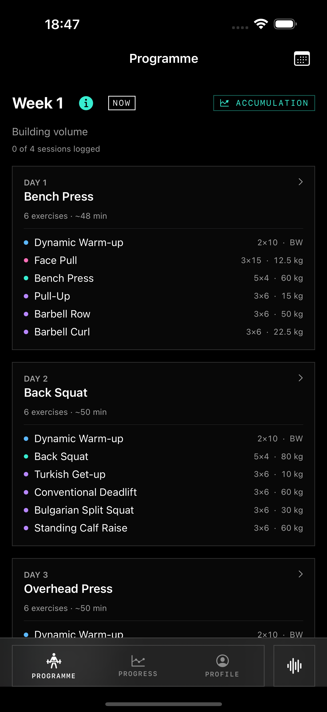
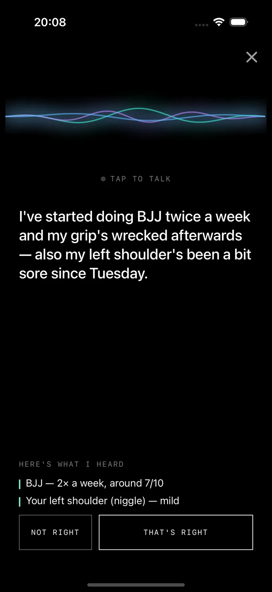
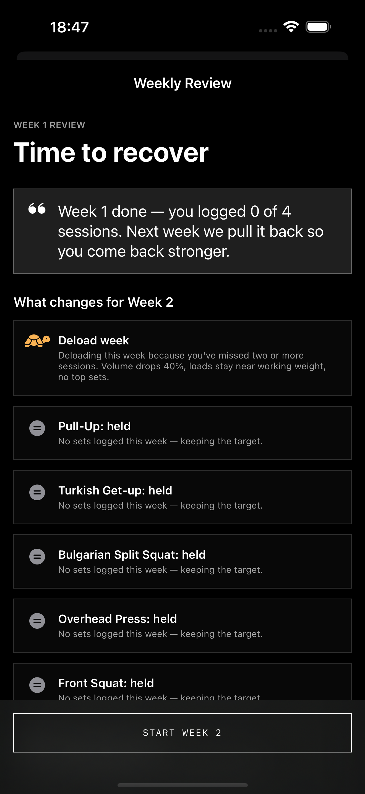
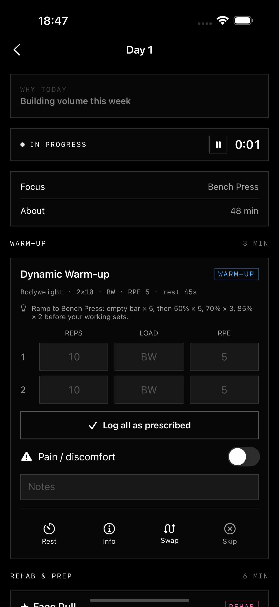
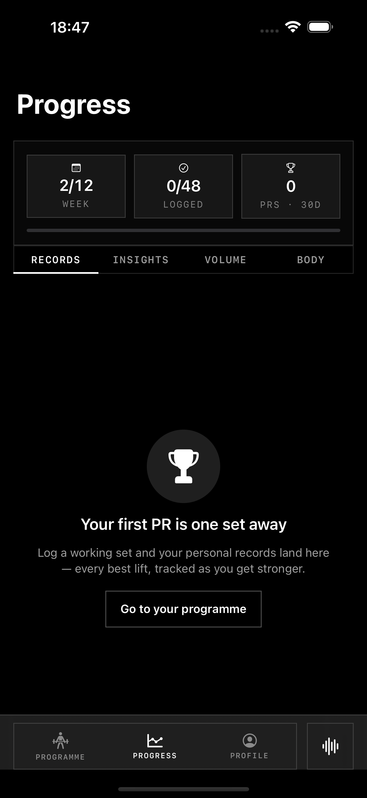

Strength for the
sport you play.
A native training product for athletes whose main sport is elsewhere. Identity, interaction and the programme engine developed together.


- Scope
- Identity · Product design · Native iOS
- Project
- Owned product · Alpha · Dan Andrews · 2026
The lifting programme has to fit the athlete’s real week.
Available days change. Another sport competes for recovery. A generic workout log does not resolve that. I built Granite around one programme model, connecting planning, coach input, working sets and training history.
Make the programme the centre of the product. Planning, voice input and working sets all act on the same training model.
Inside the product
Explore the coach, weekly review and session. These are separate native captures, selected to explain the product’s structure rather than a continuous recorded journey.


Programme structure establishes what to train and when.
The coach gives the athlete a conversational route into the plan.
Load, repetitions and rest become the primary information in the session.
One programme. Two ways in.
A separate coach conversation would leave the athlete translating advice into a plan. Granite connects that input to the programme itself.
Planning gives way to doing.
Planning and lifting require different levels of detail. The session gives immediate actions priority over the weekly overview.
The history stays with the athlete.
Programme calculations and history stay on the phone. The product can begin without an account or cloud setup.

A language for the work.
Exercise glyphs make movement recognisable throughout the programme. The same vocabulary connects the plan, the session and the product identity.
Made before the app existed.
A specific proposition, made into a complete product.
A native iOS alpha with its own identity, custom exercise glyphs, programme engine, coach input, session execution and history.
Delivered capability
A defined training proposition, its identity and its native implementation were developed together. The programme, coach, session and progress views form one product.
Evidence stage
The alpha is working product evidence. Repeated use, willingness to pay and retention still need validation.
Have a similar product or identity challenge?
Discuss a project ↗